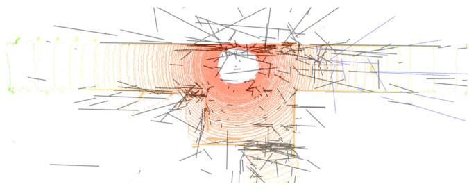
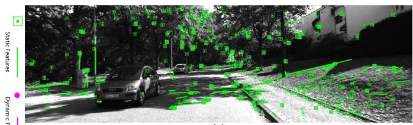

先解释「unconstrained」是什么意思。它说的是：UV-SLAM 使用结构规律性，但不施加任何约束——比如不假设 Manhattan world（曼哈顿世界，即室内所有线都平行于三个主轴），也不假设相机运动。它用 J-linkage 发现多个消失点（不止 3 个主轴），是「first optimization-based monocular SLAM using vanishing point measurements … without any restriction such as camera motion and environment」。
消失点扮演什么角色？三件事：① 作为一个新观测 / 新残差——VP 残差 = 由线算出的观测 VP 与由 3D 线方向向量估计的 VP 之差，用来校正线的方向向量（普通线重投影只用法向量，无法校正方向，于是退化）；② 用 FIM 秩分析证明 VP 测量使 3D 线的秩达到 4、完全可观测；③ 用 J-linkage 把线按消失点聚类（同 VP 同色），判断线是否有结构规律性。
原图注（Fig. 5）：Image of clustered lines using vanishing points. The lines with the same vanishing point are expressed in the same color. Usually, three or more vanishing points can be extracted using J-linkage.
怎么看这张图：同一颜色＝同一消失点的线。这正是 UV-SLAM「用 J-linkage 把线按消失点聚类」的结果——有结构规律性的线被聚到一起，无结构的线（非 Manhattan）也能被处理，因为 UV-SLAM 是 unconstrained 的。
这张图在画什么：左边两条红线交于「观测 VP」，两条蓝虚线交于「估计 VP」，两者之间的橙色箭头就是消失点残差。右边说明这条残差专门校正线的方向。 怎么看这张图：① 普通线残差只用法向量（线的位置），校正不了方向；② UV-SLAM 用 VP 残差补上「方向」这一维；③ FIM 证明这一补，线的秩从不足变满（4），彻底可观测。 要记住的一句话：消失点残差 = 观测 VP 与估计 VP 之差，它让线的方向也能被优化校准。

原图注（Fig. 1）：Top views of 3D line mapping results with LiDAR point clouds overlaid in real corridor environment (a) ALVIO. (b) UV-SLAM.
怎么看这张图：俯视图里 UV-SLAM 的线地图（b）比 ALVIO（a）更贴合 LiDAR 点云。这正是「线方向被 VP 校准后，结构化建图更准」的落地证据。
原图注（Fig. 2）：Workflow of our DPL-SLAM system. The dynamic object clearing system works in four stages…
怎么看这张图：四阶段流程——提点线特征 → 物体检测 + 对极约束判潜在动态区 → 按框内动态比例选删 → 更新剩余特征。盯着「动态物体清除」这条主线，它就是 DPL 抗动态的核心。

原图注（Fig. 8）：Schematic of our method in the outdoor KITTI experiment. (a) ORB-SLAM3. (b) Our proposed system. (c) Magnified view.
怎么看这张图：(b) 比 (a) 多保留了静止车上的特征（线 + 点都还在），动态/无关区域被清掉。这就是它「点线一起、只删动态」的室外证据。
实验与局限：TUM RGB-D walking/xyz ATE 0.012 vs ORB-SLAM3 0.275；KITTI 多数序列最佳（00: 0.74 vs O3 0.80）。Tracking 36.3 ms/帧。平台 i5-12600KF + RTX 3070Ti + YOLOv5-s。局限：s/half、s/xyz 因缺面几何信息表现差，依赖 YOLOv5。
用纯旋转判据 $\theta\le 2\arctan(\|t\|/2D)$ 检测 R-frame（纯旋转帧），不立即估深度；R-frame 挂到最近 N 个关键帧下，滑窗 BA 用 R-frame 链 + 类 ZUPT 正则约束纯旋转，专门扛住纯旋转与长时间静止。
原图注（Fig. 3）：Moving outlier detection and removal strategy… After the IMU-PARSAC algorithm, most outliers are filtered out.
怎么看这张图：这是 RD-VIO 的核心「鲁棒」机制——IMU 预积分预测的位姿与视觉匹配取交集，把动态物体造成的外点（红）滤掉，只留内点（绿）。它靠的是工程上的「IMU + 视觉共识」，不是线特征。
实验与局限：EuRoC 平均 0.133 m（SF-VIO 0.130，Baseline 0.674）；ADVIO 完整性 90–99%（VINS-Fusion 仅 60–73%）；在线 APE A3(行人) 19.6 mm vs ARKit 33.3、ARCore 40.4。运行时间全帧平均 18.38 ms vs VINS-Mono 44.72 ms。平台 i7-7700 / iPhone X（30 Hz 图 + 100 Hz IMU）。局限：长时间无有效视觉必丢跟踪；不含线特征。